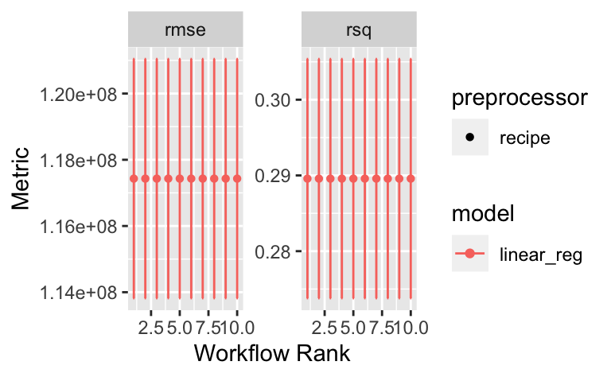

d_train_path <- "https://raw.githubusercontent.com/sebastiansauer/Lehre/main/data/tmdb-box-office-prediction/train.csv"
d_test_path <- "https://raw.githubusercontent.com/sebastiansauer/Lehre/main/data/tmdb-box-office-prediction/test.csv"tmdb08
ds1
tidymodels
statlearning
tmdb
random-forest
num
Aufgabe
Wir bearbeiten hier die Fallstudie TMDB Box Office Prediction - Can you predict a movie’s worldwide box office revenue?, ein Kaggle-Prognosewettbewerb.
Ziel ist es, genaue Vorhersagen zu machen, in diesem Fall für Filme.
Die Daten können Sie von der Kaggle-Projektseite beziehen oder so:
Aufgabe
Reichen Sie bei Kaggle eine Submission für die Fallstudie ein! Berichten Sie den Score!
Hinweise:
- Sie müssen sich bei Kaggle ein Konto anlegen (kostenlos und anonym möglich); alternativ können Sie sich mit einem Google-Konto anmelden.
- Halten Sie das Modell so einfach wie möglich. Verwenden Sie als Algorithmus die regularisierte lineare Regression .
- Minimieren Sie die Vorverarbeitung (
steps) so weit als möglich. - Verwenden Sie
tidymodels.
Lösung
Vorbereitung
library(tidyverse)
library(tidymodels)
library(tictoc)d_train_raw <- read_csv(d_train_path)
d_test_raw <- read_csv(d_test_path)Train-Set verschlanken
d_train <-
d_train_raw %>%
select(id, popularity, runtime, revenue, budget) Test-Set verschlanken
d_test <-
d_test_raw %>%
select(id,popularity, runtime, budget) Rezept
Rezept definieren
rec2 <-
recipe(revenue ~ ., data = d_train) %>%
step_mutate(budget = ifelse(budget == 0, 1, budget)) %>% # log mag keine 0
step_log(budget) %>%
step_impute_knn(all_predictors()) %>%
step_dummy(all_nominal_predictors()) %>%
update_role(id, new_role = "id")
rec2Kreuzvalidierung / Resampling
cv_scheme <- vfold_cv(d_train,
v = 5)Modelle
LM regularisiert
Mit mixture = 1 definieren wir ein Lasso.
mod_lm <-
linear_reg(penalty = tune(), mixture = 1) %>%
set_engine("glmnet")Check:
mod_lmLinear Regression Model Specification (regression)
Main Arguments:
penalty = tune()
mixture = 1
Computational engine: glmnet Workflow-Set
Hier nur ein sehr kleiner Workflow-Set.
Das ist übrigens eine gute Strategie: Erstmal mit einem kleinen Prozess anfangen, und dann sukzessive erweitern.
preproc2 <- list(rec1 = rec2)
models2 <- list(lm1 = mod_lm)
all_workflows2 <- workflow_set(preproc2, models2)Fitten und tunen
my_grid <- grid_max_entropy(penalty(), size = 10)tmdb_model_set2 <-
all_workflows2 %>%
workflow_map(resamples = cv_scheme,
verbose = TRUE,
grid = my_grid
)autoplot(tmdb_model_set2)
Finalisieren
Wir müssen uns leider händisch das beste Modell raussuchen:
tmdb_model_set2 %>%
collect_metrics() %>%
arrange(mean) %>%
filter(.metric == "rmse") %>%
select(1,2, mean, std_err)# A tibble: 10 × 4
wflow_id .config mean std_err
<chr> <chr> <dbl> <dbl>
1 rec1_lm1 Preprocessor1_Model01 117430971. 2196801.
2 rec1_lm1 Preprocessor1_Model02 117430971. 2196801.
3 rec1_lm1 Preprocessor1_Model03 117430971. 2196801.
4 rec1_lm1 Preprocessor1_Model04 117430971. 2196801.
5 rec1_lm1 Preprocessor1_Model05 117430971. 2196801.
6 rec1_lm1 Preprocessor1_Model06 117430971. 2196801.
7 rec1_lm1 Preprocessor1_Model07 117430971. 2196801.
8 rec1_lm1 Preprocessor1_Model08 117430971. 2196801.
9 rec1_lm1 Preprocessor1_Model09 117430971. 2196801.
10 rec1_lm1 Preprocessor1_Model10 117430971. 2196801.best_model_params2 <-
extract_workflow_set_result(tmdb_model_set2, "rec1_lm1") %>%
select_best()Warning: No value of `metric` was given; metric 'rmse' will be used.best_model_params2# A tibble: 1 × 2
penalty .config
<dbl> <chr>
1 1.12e-10 Preprocessor1_Model01Finalisieren
Finalisieren bedeutet:
- Besten Workflow identifizieren (zur Erinnerung: Workflow = Rezept + Modell)
- Den besten Workflow mit den optimalen Modell-Parametern ausstatten
- Damit dann den ganzen Train-Datensatz fitten
- Auf dieser Basis das Test-Sample vorhersagen
best_wf2 <-
all_workflows2 %>%
extract_workflow("rec1_lm1")
best_wf2══ Workflow ════════════════════════════════════════════════════════════════════
Preprocessor: Recipe
Model: linear_reg()
── Preprocessor ────────────────────────────────────────────────────────────────
4 Recipe Steps
• step_mutate()
• step_log()
• step_impute_knn()
• step_dummy()
── Model ───────────────────────────────────────────────────────────────────────
Linear Regression Model Specification (regression)
Main Arguments:
penalty = tune()
mixture = 1
Computational engine: glmnet best_wf_finalized2 <-
best_wf2 %>%
finalize_workflow(best_model_params2)
best_wf_finalized2══ Workflow ════════════════════════════════════════════════════════════════════
Preprocessor: Recipe
Model: linear_reg()
── Preprocessor ────────────────────────────────────────────────────────────────
4 Recipe Steps
• step_mutate()
• step_log()
• step_impute_knn()
• step_dummy()
── Model ───────────────────────────────────────────────────────────────────────
Linear Regression Model Specification (regression)
Main Arguments:
penalty = 1.12138579835732e-10
mixture = 1
Computational engine: glmnet Final Fit
fit_final2 <-
best_wf_finalized2 %>%
fit(d_train)
fit_final2══ Workflow [trained] ══════════════════════════════════════════════════════════
Preprocessor: Recipe
Model: linear_reg()
── Preprocessor ────────────────────────────────────────────────────────────────
4 Recipe Steps
• step_mutate()
• step_log()
• step_impute_knn()
• step_dummy()
── Model ───────────────────────────────────────────────────────────────────────
Call: glmnet::glmnet(x = maybe_matrix(x), y = y, family = "gaussian", alpha = ~1)
Df %Dev Lambda
1 0 0.00 63460000
2 1 3.62 57820000
3 1 6.62 52680000
4 1 9.11 48000000
5 1 11.18 43740000
6 1 12.90 39850000
7 2 15.24 36310000
8 2 17.19 33090000
9 2 18.81 30150000
10 2 20.16 27470000
11 2 21.28 25030000
12 2 22.21 22800000
13 3 23.10 20780000
14 3 23.95 18930000
15 3 24.66 17250000
16 3 25.25 15720000
17 3 25.74 14320000
18 3 26.15 13050000
19 3 26.49 11890000
20 3 26.77 10830000
21 3 27.00 9872000
22 3 27.20 8995000
23 3 27.36 8196000
24 3 27.49 7467000
25 3 27.60 6804000
26 3 27.69 6200000
27 3 27.77 5649000
28 3 27.83 5147000
29 3 27.88 4690000
30 3 27.93 4273000
31 3 27.96 3894000
32 3 27.99 3548000
33 3 28.02 3232000
34 3 28.04 2945000
35 3 28.06 2684000
36 3 28.07 2445000
37 3 28.08 2228000
38 3 28.09 2030000
39 3 28.10 1850000
40 3 28.11 1685000
41 3 28.11 1536000
42 3 28.12 1399000
43 3 28.12 1275000
44 3 28.13 1162000
45 3 28.13 1058000
46 3 28.13 964500
...
and 12 more lines.preds <-
fit_final2 %>%
predict(new_data = d_test)
head(preds)# A tibble: 6 × 1
.pred
<dbl>
1 -14840891.
2 10804710.
3 11698900.
4 99190531.
5 41798496.
6 29974421.Submission df
Wir brauchen die ID-Spalte und die Vorhersagen für die Einreichung:
submission_df <-
d_test %>%
select(id) %>%
bind_cols(preds) %>%
rename(revenue = .pred)
head(submission_df)# A tibble: 6 × 2
id revenue
<dbl> <dbl>
1 3001 -14840891.
2 3002 10804710.
3 3003 11698900.
4 3004 99190531.
5 3005 41798496.
6 3006 29974421.Abspeichern und einreichen:
write_csv(submission_df, file = "submission_regul_lm.csv")Leider ein schlechter Score: 5.77945.
Categories:
- ds1
- tidymodels
- statlearning
- tmdb
- random-forest
- num